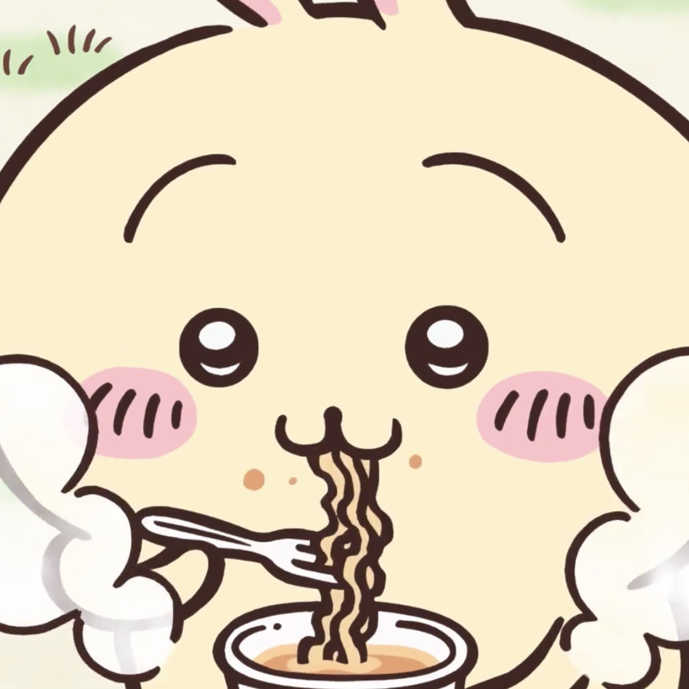

Chiikawa is the titular protagonist of the manga and the anime series. Early on, Chiikawa was named as Nitori. Chiikawa is depicted as timid and tearful, afraid of monsters, and living in a house won in the Muchauma Yogurt lottery. Chiikawa, unlike some other characters, cannot speak in a way that is intelligible to the audience, only saying things such as "yada" and "iya", both of which are child-like ways of saying "no" in Japanese. It expresses itself primarily through sounds, but it is understandable to the rest of the cast.

Usagi, originally named Donki, is a friend of both Chiikawa and Hachiware. Depicted as high-spirited, Usagi occasionally acts as a troublemaker, though it supports its friends when they are in trouble. Similar to Chiikawa, Usagi is unintelligible to the audience, making noises such as "una" and "yaha", but is understandable to the other characters. Usagi's name and design is based on those of a rabbit, though it "may or may not" be one. Usagi is mainly known for being eccentric and a foodie.